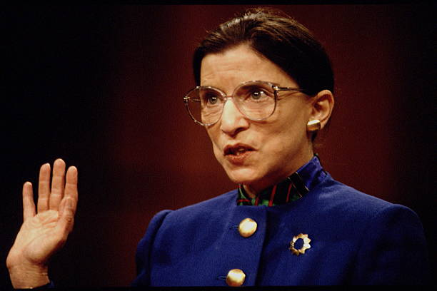

Ruth Bader Ginsburg
The "Rational Minimalist"

The above image shows Ruth Bader Ginsburg being sworn in as a Supreme Court Justice.
Here's a timeline of Justice Ginsburg's life:
- 1933 - Born
- 1954 - Graduated from Cornell Law School
- 1959 - Enrolled at Harvard Law School
- 1959 - Denied request to complete third year at Harvard
- 1959 - Transferred to Columbia Law School
- 1959 - Became first woman to be on two major law reviews: Harvard and Columbia
- 1960 - Rejected for a clerkship due to gender
- 1968 - Involvement with the American Civil Liberties Union begins
- 1972 - Hired with tenure at Columbia Law School
- 1977 - Fellow at the Center for Advanced Study in Behaviorial Sciences at Stanford
- 1980 - Appointed to the U.S. Court of Appeals for the District of Columbia
- 1993 - President Clinton announces nomination to the U.S. Supreme Court
- 1999 - First cancer diagnosis
- 2000 - Dissented in Bush v. Gore
- 2002 - Inducted into the National Women's Hall of Fame
- 2009 - Second cancer diagnosis
- 2015 - Voted to strike down the bans that barred same-sex marriage
- 2018 - Third cancer diagnosis
- 2020 - Fourth cancer diagnosis
- 2020 - Died